Code Call Out 6.1: Non-parametric estimation procedures
In this code call-out we will examine two common non-parametric estimation methods, and see why local linear regression, rather than the Nadaraya-Watson estimator, is preferred for regression discontinuity designs. We will consider a quite simple case, and examine how each of these techniques, along with a number of auxiliary modelling choices, manage to recover an underlying data generating process (DGP). To do this, we will work with the following simulated data: \[y_i = \sin{(x_i)} + \varepsilon_i \quad , \quad -3 \leq x \leq 3 \ , \ \varepsilon_i \sim \mathcal{N}(0,0.01)\] which will simply provide a sine function along with random noise. Below we will simulate 500 realisations of this, plotting the resulting data:
Generally, our goal in non-parametric estimation procedures will be to flexibly describe some data, or the relationship between two (or more) variables, and will do so by modelling variation local to some point of interest. These processes require at least two choices: a decision of which obesrvations we consider “local” to each point, as well as a decision about how to weight variables around these points. The first of these choices is referred to as the bandwidth, whereas the second of these points is controlled by a kernel function, which can place more or less weight on variables at differing distances from the point of interest. For further information on these elements, refer to Section 6.3.2.3 of the book.
Bandwidth and Kernel Choices
Before we consider non-parametric models which seek to describe relationships between two variables (\(x_i\) and \(y_i\) above), we will explore the impact of choices of bandwidths and kernels when simply estimating the density of a single variable (\(y_i\)) itself. Prior to doing this, you may wish to note that above, even though we have simulated an evenly spaced grid for \(x_i\), there will be more observations of \(y_i\) at certain points given the nature of the sine function (and you can confirm this by generating a histogram of the \(y_i\) data simulated here, or by simply exploring how \(\sin{x_i}\) maps into \(y_i\) at various different points of \(x_i\).)
Below, we will estimate the density of our \(y_i\) variable using a kernel density plot with the 4 different kernel functions plotted in Figure 6.6 of the book:
In general, we can see that while these kernel choices lead to reasonably similar descriptions of the data, the uniform kernel is the most noisy, which makes sense given that it places equal weight to observations which are close, and those which are further from each point of interest \(y\).
For these kernel density estimates presented above, the optimal bandwidth calculated automatically by R is used. This is Silverman’s rule of thumb bandwidth (Silverman (1986), p. 48) which is calculated as: \[h=0.9\times\min\bigg(\sigma,\frac{IQR}{1.34}\bigg)\times N^{-1/5}\] where \(\sigma\) refers to the standard deviation, and \(IQR\) the interquartile range of the data. Varying these bandwidth values below (with a triangular kernel by default) we can see how densities are (over)-smooth with large bandwidths, while quite jumpy with small bandwidths:
Having briefly explored these auxiliary choices, let’s examine non-parametric estimation methods to describe relationships between two variables (in this case \(y\) and \(x\)). Here, we will examine the Nadaraya-Watson estimator (with a number of distinct kernels), and compare this to local linear regression. For this we use the user-written function kreg from the gplm package for the Nadaraya-Watson estimator, and the locpol package for local-linear regression.
We begin below by estimating a Nadaraya-Watson with a triangular and an Epanechnikov kernel, saving the output of these two estimation procedures. We will not inspect output yet (we will do so below), but you may wish to print the output of either of these to see that we are returned a regression fit, as well as a number of pieces of information such as the bandwidth used by default.
library(gplm)NW_t <-kreg(x = df$x, y = df$y, kernel ="triangle")NW_e <-kreg(x = df$x, y = df$y, kernel ="epanechnikov")
We will now do a similar procedure for local linear regression using these two kernels (Epanechnikov is the default kernel in this case):
library(locpol)LLR_e <-locpol(data = df, formula = y ~ x, xeval = df$x)LLR_t <-locpol(data = df, formula = y ~ x, xeval = df$x, kernel=TrianK)
We can now inspect the output of each of these procedures and plot the estimated fit on top of the original data. We do this in the code block below:
library(ggplot2)ggplot() +# Real datageom_point(data = df, aes(x = x, y = y), size =1) +# Traingular NWgeom_line(data =data.frame(x = NW_t[["x"]], y = NW_t[["y"]]), aes(x = Var1, y = y, color ="NW Triangle"), linewidth =1) +# Epanechnikov NWgeom_line(data =data.frame(x = NW_e[["x"]], y = NW_e[["y"]]), aes(x = Var1, y = y, color ="NW Epanechnikov"), linewidth =1) +# Triangular LLRgeom_line(data =data.frame(x = LLR_t$lpFit$x, y = LLR_t$lpFit$y), aes(x = x, y = y, color ="LLR Triangle"), linewidth =1) +# Epanechnikov LLRgeom_line(data =data.frame(x = LLR_e$lpFit$x, y = LLR_e$lpFit$y), aes(x = x, y = y, color ="LLR Epanechnikov"), linewidth =1) +scale_color_manual("Method",values =c("NW Triangle"="red","NW Epanechnikov"="cyan","LLR Triangle"="purple","LLR Epanechnikov"="forestgreen")) +labs(title ="Non-parametric regressions",subtitle ="with different methods",x ="x", y = latex2exp::TeX(paste0("y = \\sin{(x)} + ","\\epsilon , ","\\epsilon \\sim ","\\mathcal{N}(0,0.1)"))) +theme(legend.key =element_rect(fill =NA),legend.position ="bottom")
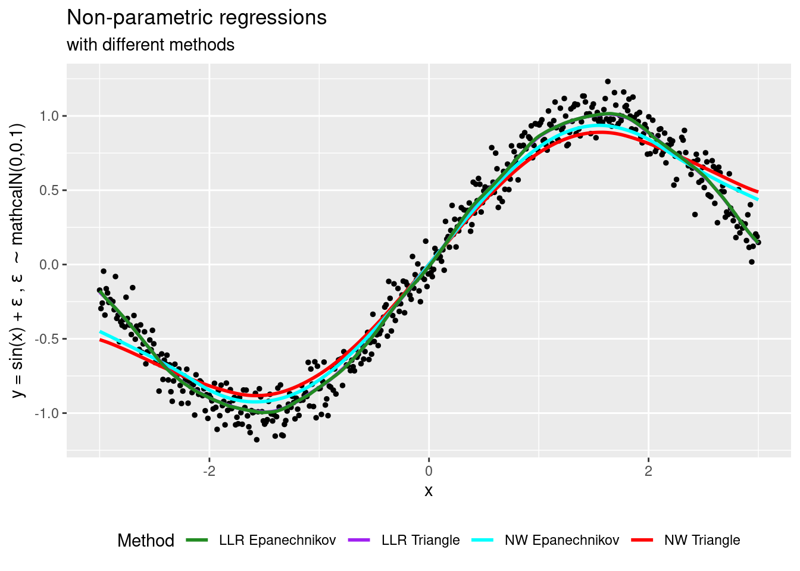
A key thing to note in the above is that while the Nadaraya-Watson and local linear regression provide quite similar fits away from the end points of the data, at the end points (ie where \(x\) is close to -3 and 3), they diverge substantially, with local linear regression appearing to do a much better job of approximating the true data.
While this pattern lines up with the discussion of local linear regression as providing a better fit at the end point of data, we have simply accepted default arguments from each of the above libraries. Below we consider cases where we can compare with a range of (similar) bandwidths, always using an identical triangular kernel:
# EstimateNW_t1 <-kreg(x = df$x, y = df$y, kernel ="triangle", bandwidth =0.25)NW_t2 <-kreg(x = df$x, y = df$y, kernel ="triangle", bandwidth =0.5)LL_t1 <-locpol(data = df, formula = y ~ x, xeval = df$x, kernel=TrianK, bw=0.25)LL_t2 <-locpol(data = df, formula = y ~ x, xeval = df$x, kernel=TrianK, bw=0.5)# Plotggplot() +# Real datageom_point(data = df, aes(x = x, y = y), size =1) +# Bandwidth = 0.25 NWgeom_line(data =data.frame(x = NW_t1[["x"]], y = NW_t1[["y"]]), aes(x = Var1, y = y, color ="0.25 (NW)"), linewidth =1) +# Bandwidth = 0.5 NWgeom_line(data =data.frame(x = NW_t2[["x"]], y = NW_t2[["y"]]), aes(x = Var1, y = y, color ="0.5 (NW)"), linewidth =1) +# Bandwidth = 0.25 LLgeom_line(data =data.frame(x = LL_t1$lpFit$x, y = LL_t1$lpFit$y), aes(x = x, y = y, color ="0.25 (LL)"), linewidth =1) +# Bandwidth = 0.5 LLgeom_line(data =data.frame(x = LL_t2$lpFit$x, y = LL_t2$lpFit$y), aes(x = x, y = y, color ="0.5 (LL)"), linewidth =1) +scale_color_manual("Bandwidth",values =c("0.25 (NW)"="red","0.5 (NW)"="cyan","0.25 (LL)"="forestgreen","0.5 (LL)"="blue")) +labs(title ="Non-parametric fits (NW and LLR)",subtitle ="with different bandwidth and triangle kernel",x ="x", y = latex2exp::TeX(paste0("y = \\sin{(x)} + ","\\epsilon , ","\\epsilon \\sim ","N(0,0.1)"))) +theme(legend.key =element_rect(fill =NA),legend.position ="bottom")
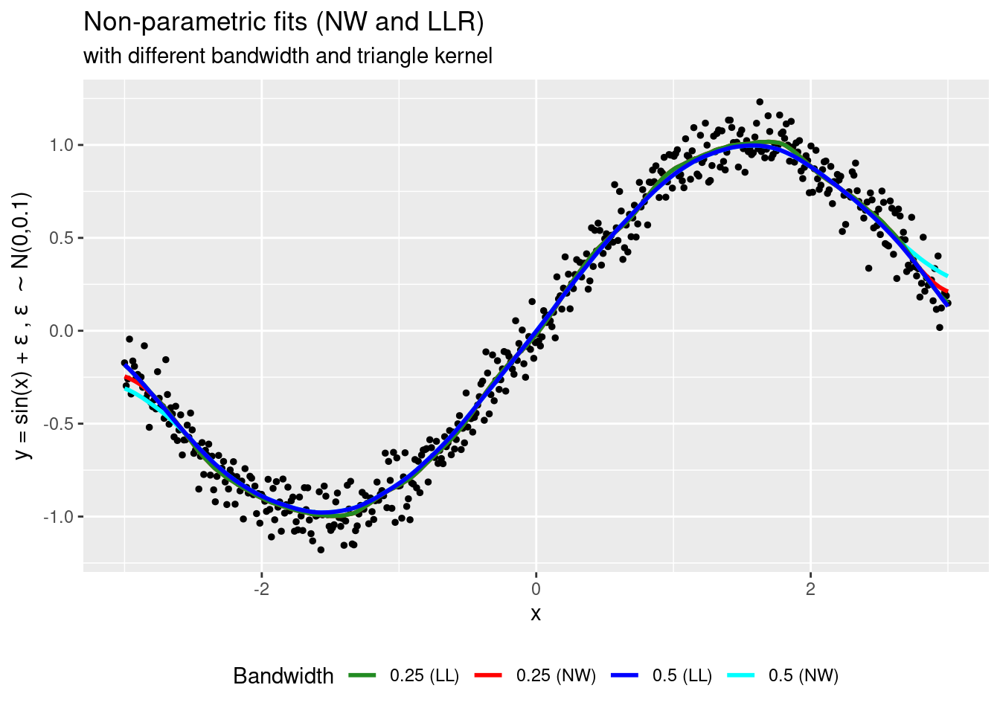
In this case we see that with identical (arbitrary) bandwidths, the performance of Nadaraya-Watson and Local Linear regression is virtually identical away from the end points, degrading for Nadaraya-Watson at the end points of data.
Examining the implications for regression-discontinuity estimation
To see what this may imply for RD estimation, we will consider estimates of end points on either side of a discontinuity. We will do this by generating a jump in the previous function at the point where \(x = 0\), and then modelling regression fits on either side of this cut-off. Below we generate this jump in our data, and plot the result:
Let’s now examine what our regression fits look like if we separately model on either side of the cut-off with Nadaraya-Watson and Local Linear regressions. Below we do this, using default bandwidths from each routine:
rm(list =setdiff(ls(), "df"))NW_l <-kreg(x = df$x[df$x <=0], y = df$y[df$x <=0], kernel ="triangle")NW_r <-kreg(x = df$x[df$x >0], y = df$y[df$x >0], kernel ="triangle")LLR_l <-locpol(data = df[df$x <=0,], formula = y ~ x, xeval = df$x[df$x <=0], kernel=TrianK)LLR_r <-locpol(data = df[df$x >0,], formula = y ~ x, xeval = df$x[df$x >0], kernel=TrianK)ggplot() +# Datageom_point(data = df, aes(x = x, y = y), size =1) +# Cut-offgeom_vline(xintercept =0, color ="red", linetype ="dashed", linewidth =1) +# NW## Left sidegeom_line(data =data.frame(x = NW_l[["x"]], y = NW_l[["y"]]), aes(x = Var1, y = y, color ="NW"), linewidth =1) +## Right sidegeom_line(data =data.frame(x = NW_r[["x"]], y = NW_r[["y"]]), aes(x = Var1, y = y, color ="NW"), linewidth =1) +# LLR## Left sidegeom_line(data =data.frame(x = LLR_l$lpFit$x, y = LLR_l$lpFit$y), aes(x = x, y = y, color ="LLR"), linewidth =1) +## Right sidegeom_line(data =data.frame(x = LLR_r$lpFit$x, y = LLR_r$lpFit$y), aes(x = x, y = y, color ="LLR"), linewidth =1) +scale_color_manual("Method",values =c("NW"="blue","LLR"="forestgreen")) +scale_x_continuous(limits =c(-3, 3),breaks =seq(-3, 3, 1),labels =seq(-3, 3, 1)) +scale_y_continuous(limits =c(-1.5, 2.5),breaks =seq(-1.5, 2.5, 0.5),labels =seq(-1.5, 2.5, 0.5)) +theme(legend.position ="bottom")
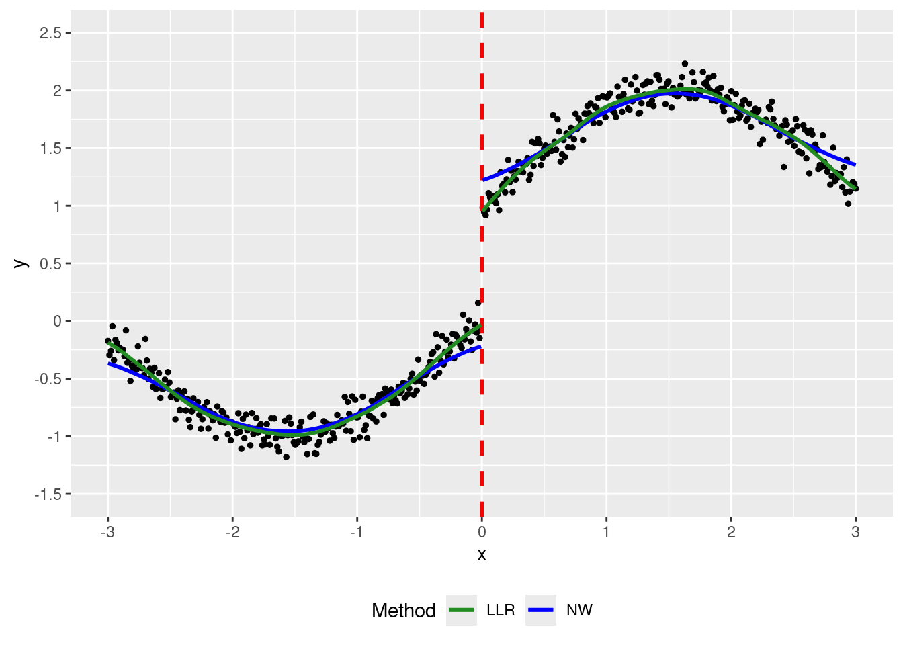
as expected (and as we saw previously when examining end points of data), at points close to cutoff we observe that Local Linear regression seems to substantially outperform Nadaraya-Watson regression.
To examine this more formally, we will conduct a Monte Carlo experiment in which we repeat the above exercise 1000 times (using a similar bandwidth for each procedure), and examine the 95% confidence intervals from our regression estimates. We will begin by simply setting up some empty matrices to populate with resulting regression fits from each of 1000 simulations:
Now, let’s conduct our 1000 simulations. The key thing to note in the below “experiment” is that in each iteration we are re-simulating data \(y\) and then storing the resulting regression fit (for both Nadaraya-Watson and Local linear regession) in the pre-generated matrices:
Now, with this in hand we wish to observe the regression fits at percentile 2.5 and 97.5, allowing us to form an empirical 95% confidence interval for our simulated data. We do this below using R’s pipe notation (|>), as well as the mutate function from the dplyr package.
Now finally, let’s have a look at each of the resulting end points, and compare it with the true underlying data generating process. We will do so by plotting the confidence intervals we generated above for both local linear and Nadaraya-Watson estimates.
# Plot## NWp1 <-ggplot() +# Datageom_line(data = df, aes(x = x, y =sin(x) + (x >0), color ="DGP"), linewidth =1, alpha =0.7) +# Cut-offgeom_vline(xintercept =0, color ="red", linetype ="dashed", linewidth =1) +# NW## Left sidegeom_line(data = NWs_l_aux, aes(x = Var1, y = p2_5, color ="IC"), linetype ="dashed", linewidth =1) +geom_line(data = NWs_l_aux, aes(x = Var1, y = p97_5, color ="IC"), linetype ="dashed", linewidth =1) +## Right sidegeom_line(data = NWs_r_aux, aes(x = Var1, y = p2_5, color ="IC"), linetype ="dashed", linewidth =1) +geom_line(data = NWs_r_aux, aes(x = Var1, y = p97_5, color ="IC"), linetype ="dashed", linewidth =1) +# Plot general settingsscale_color_manual("", values =c("DGP"="black","IC"="blue")) +scale_x_continuous(limits =c(-3, 3),breaks =seq(-3, 3, 1),labels =seq(-3, 3, 1)) +scale_y_continuous(limits =c(-1.5, 2.5),breaks =seq(-1.5, 2.5, 0.5),labels =seq(-1.5, 2.5, 0.5)) +labs(title ="Nadaraya-Watson Regression", x ="x", y ="y") +theme(legend.position ="bottom")## Main LLRp2 <-ggplot() +# Datageom_line(data = df, aes(x = x, y =sin(x) + (x >0), color ="DGP"), linewidth =1, alpha =0.7) +# Cut-offgeom_vline(xintercept =0, color ="red", linetype ="dashed", linewidth =1) +# LLR## Left sidegeom_line(data = LLRs_l_aux, aes(x =`LLR_l$lpFit$x`, y = p2_5, color ="IC"),linetype ="dashed", linewidth =1) +geom_line(data = LLRs_l_aux, aes(x =`LLR_l$lpFit$x`, y = p97_5, color ="IC"),linetype ="dashed", linewidth =1) +## Right sidegeom_line(data = LLRs_r_aux, aes(x =`LLR_r$lpFit$x`, y = p2_5, color ="IC"),linetype ="dashed", linewidth =1) +geom_line(data = LLRs_r_aux, aes(x =`LLR_r$lpFit$x`, y = p97_5, color ="IC"),linetype ="dashed", linewidth =1) +# Plot general settingsscale_color_manual("", values =c("DGP"="black","IC"="blue")) +scale_x_continuous(limits =c(-3, 3),breaks =seq(-3, 3, 1),labels =seq(-3, 3, 1)) +scale_y_continuous(limits =c(-1.5, 2.5),breaks =seq(-1.5, 2.5, 0.5),labels =seq(-1.5, 2.5, 0.5)) +labs(title ="Local Linear Regression", x ="x", y ="y") +theme(legend.position ="bottom")# Combine plotslibrary(ggpubr)ggarrange(p1, p2, nrow =1, common.legend = T, legend ="bottom")
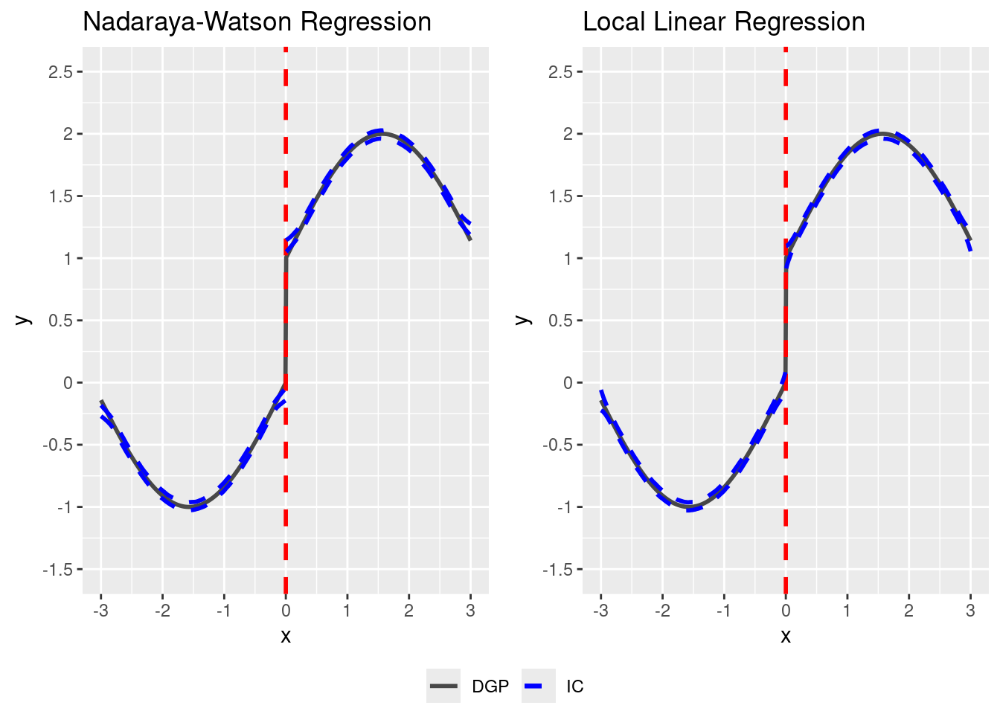
While it appears that once again we can see the degradation of the behaviour of the fit with Nadaraya-Watson estimator at the end points of data, the confidence intervals here are quite narrow, and it is difficult to appreciate the divergence between these intervals and the underlying DGP plotted in grey. This is much clearer if we zoom in on the zone \(-0.5 \leq x \leq 0.5\), as below:
# Plot## NWp1 <-ggplot() +# Datageom_line(data = df[df$x <=0,], aes(x = x, y =sin(x) + (x >0), color ="DGP"),linewidth =1, alpha =0.7) +geom_line(data = df[df$x >0,], aes(x = x, y =sin(x) + (x >0), color ="DGP"),linewidth =1, alpha =0.7) +# Cut-offgeom_vline(xintercept =0, color ="red", linetype ="dashed", linewidth =1) +# NW## Left sidegeom_line(data = NWs_l_aux, aes(x = Var1, y = p2_5, color ="IC"), linetype ="dashed", linewidth =1) +geom_line(data = NWs_l_aux, aes(x = Var1, y = p97_5, color ="IC"), linetype ="dashed", linewidth =1) +geom_line(data = NWs_r_aux, aes(x = Var1, y = p2_5, color ="IC"), linetype ="dashed", linewidth =1) +geom_line(data = NWs_r_aux, aes(x = Var1, y = p97_5, color ="IC"), linetype ="dashed", linewidth =1) +# Plot general settingsscale_color_manual("", values =c("DGP"="black","CI"="blue")) +scale_x_continuous(limits =c(-0.5, 0.5),breaks =seq(-0.5, 0.5, 0.25),labels =seq(-0.5, 0.5, 0.25)) +scale_y_continuous(limits =c(-0.75, 1.75),breaks =seq(-1, 2, 0.5),labels =seq(-1, 2, 0.5)) +labs(title ="Nadaraya-Watson Regression", x ="x", y ="y") +theme(legend.position ="bottom")## Main LLRp2 <-ggplot() +# Datageom_line(data = df[df$x <=0,], aes(x = x, y =sin(x) + (x >0), color ="DGP"),linewidth =1, alpha =0.7) +geom_line(data = df[df$x >0,], aes(x = x, y =sin(x) + (x >0), color ="DGP"),linewidth =1, alpha =0.7) +# Cut-offgeom_vline(xintercept =0, color ="red", linetype ="dashed", linewidth =1) +# LLR## Left sidegeom_line(data = LLRs_l_aux, aes(x =`LLR_l$lpFit$x`, y = p2_5, color ="IC"),linetype ="dashed", linewidth =1) +geom_line(data = LLRs_l_aux, aes(x =`LLR_l$lpFit$x`, y = p97_5, color ="IC"),linetype ="dashed", linewidth =1) +## Right sidegeom_line(data = LLRs_r_aux, aes(x =`LLR_r$lpFit$x`, y = p2_5, color ="IC"),linetype ="dashed", linewidth =1) +geom_line(data = LLRs_r_aux, aes(x =`LLR_r$lpFit$x`, y = p97_5, color ="IC"),linetype ="dashed", linewidth =1) +# Plot general settingsscale_color_manual("", values =c("DGP"="black","CI"="blue")) +scale_x_continuous(limits =c(-0.5, 0.5),breaks =seq(-0.5, 0.5, 0.25),labels =seq(-0.5, 0.5, 0.25)) +scale_y_continuous(limits =c(-0.75, 1.75),breaks =seq(-1, 2, 0.5),labels =seq(-1, 2, 0.5)) +labs(title ="Local Linear Regression", x ="x", y ="y") +theme(legend.position ="bottom")# Combine plotslibrary(ggpubr)ggarrange(p1, p2, nrow =1, common.legend = T, legend ="bottom")
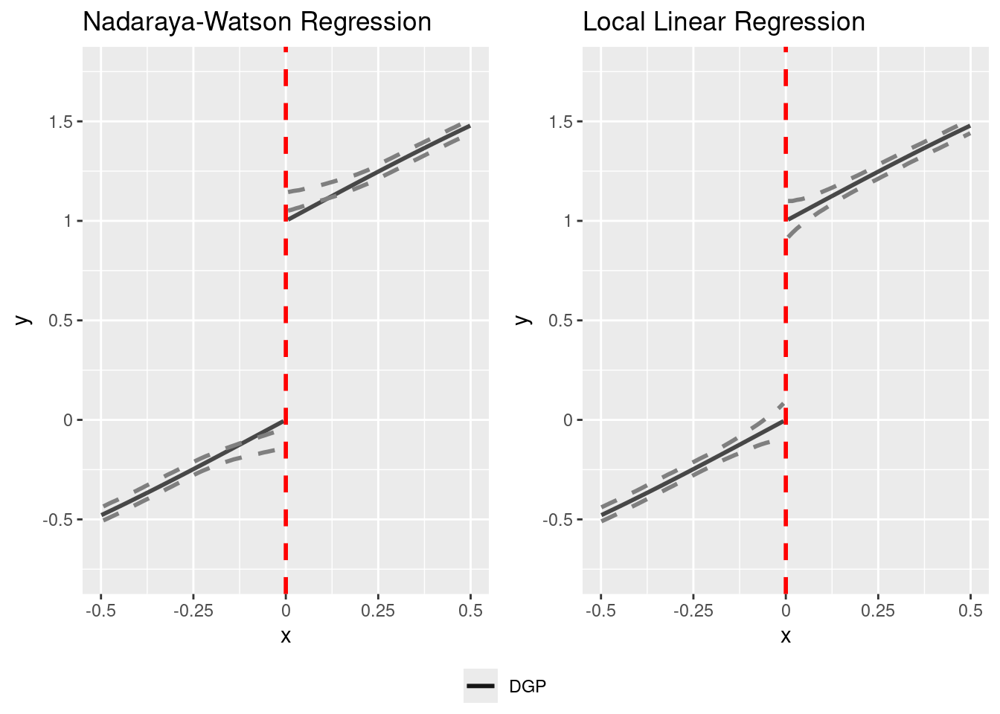
In this case we clearly see that while the local linear regression estimator contains the true DGP at all points, the Nadaraya-Watson estimator diverges close to the end points on each side, which is precisely the area we will be interested in when conducting regression discontinuity analyses. What’s more, if we use a larger bandwidth, we will see that this behaviour only becomes more problematic.
Code Call Out 6.2: Implementing regression discontinuity estimators
This Code Call Out is under construction.
Hansen (2015) is interested in determining whether the sanctions on a driving under the influence of alcohol (DUI) affect recidivism. The DUI is determined by the blood alcohol content (BAC). This paper uses administrative records on a 512,964 DUI stops in Washington state (WA). A BAC above 0.08 denotes a DUI and forms a sharp threshold. Hansen exploits this threshold in a sharp regression discontinuity design. This paper finds evidence that having a blood alcohol content about the DUI threshold reduces rates of recidivism over the next four years.
We can visualise the design below. First, if we inspec the running variable, we can see that individuals are observed to have measured BACs over a wide range of values, with, as expected, no noteworthy bunching at the threshold arrest value of 0.08:
Second, we can see that the regression discontinuity is indeed sharp, with a jump in arrests for DUI from 0 at values of BAC at less then 0.08, to 1 for individuals with a BAC of 0.08 or higher.
p_dui <- dwi %>%ggplot(aes(x = bac1, y = dui)) +geom_point(alpha =0.2) +geom_vline(aes(xintercept =0.08), linetype =2, color ="tomato") +labs(x ="BAC1", y ="DUI") +theme_clean() +theme(plot.background =element_rect(color ="white")) +coord_fixed(ratio =0.25)p_dui
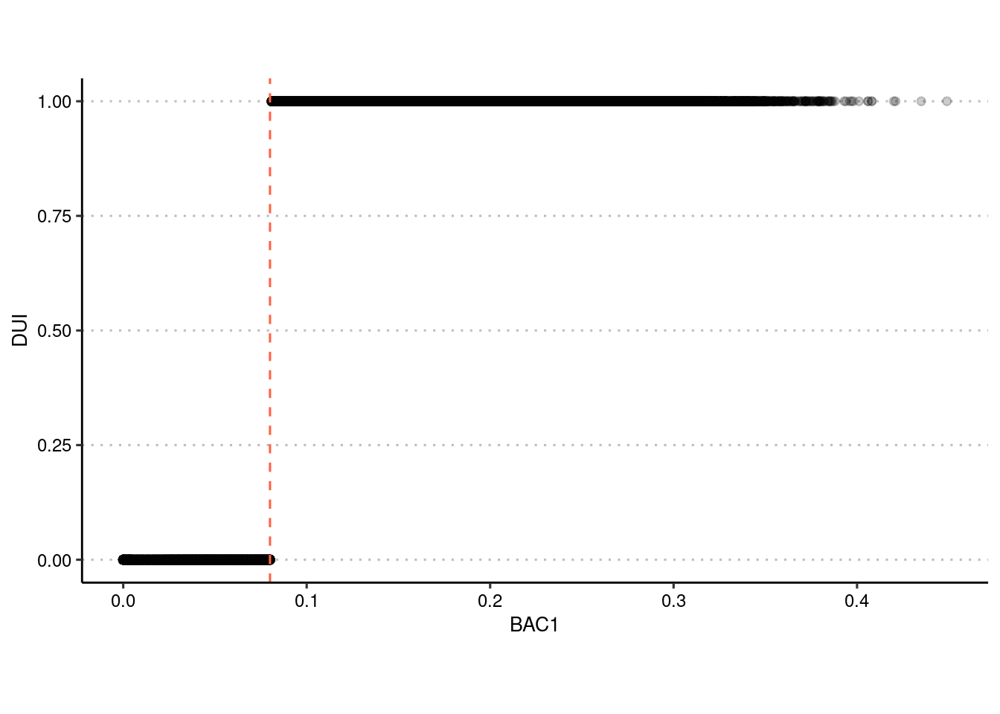
In this code call out, we will explore the implementation of a Regression Discontinuity Design (RDD) which seeks to estimate the effect of these DUI arrests on recidivism, using BAC levels as the running variable. We will see how to implement the optimal procedure of Calonico, Cattaneo, and Titiunik (2014), and also that we can perfectly replicate the point estimates returned by these procedures by estimating simple regression models in the optimal bandwidth indicate.
We start below by loading our data once again, and re-standardising the running variable such that the cut-point is centreed precisely at 0. We could proceed without doing this, however this simplifies our models as well as the syntax of a number of commands. Then, provided that rdrobust is installed, we can estimate the optimal RDD estimate with a linear specification for the running variable and using a uniform kernel as below.
In practice, the linear specification for the runnign variable simply implies the following model. Here, \(DUI_i\) takes values of 1 if an individual is arrested for a DUI (ie if \(BAC\geq 0.08\)), or 0 otherwise. We then allow for separate linear trends for the running variable on either side as \(\beta_1\) will capture the trend on the left-hand side, while \(\beta_1+\beta_2\) will capture the trend on the right-hand side. Thus, our model below allows for separate linear trends, while also allowing for a discontinuity at the cut-point, captured by the parameter on the binary variable \(DUI_i\). \[
recidivism_i = \beta_0 + \beta_1 BAC_i + \beta_2 BAC_i \times DUI_i + \tau^{RDD} DUI_i + \varepsilon_i
\]
Before estimating the regression discontinuity estimate itself, we can confirm to ourselves that this model does effectively allow for a separate linear trend on each side of the cut-off, and separate intercept terms on either side of the cut-off. Below, we will set-up the required variables, and then calculate the predicted trend for the below cut-off portion of our model (y_below), as well as the above cut-off portion of our model:
data <-read_dta("data/Hansen_2014.dta")data$bac1 <- data$bac1 -0.08rdd_result <-rdrobust(data$recidivism, data$bac1, kernel ="uniform")coef_rdrobust_value <- rdd_result$coef[1] # Save the RD estimate coefficient for reference# Create a dummy variable `dui` that equals 1 if `bac1` is greater than 0, indicating DUI statusdata$dui <-as.integer(data$bac1 >0)# Create an interaction term `bacXabove`data$bacXabove <- data$bac1 * data$dui# Run a manual OLS regression of recidivism on DUI status, centered BAC, and the interaction term# Using lm() to estimate within the RD bandwidth manually if neededols_model <-lm(recidivism ~ dui + bac1 + bacXabove, data = data)# Extract coefficientsb0 <-coef(ols_model)[1]b_dui <-coef(ols_model)["dui"]b_bac1 <-coef(ols_model)["bac1"]b_bacXabove <-coef(ols_model)["bacXabove"]# Generate predicted values for below and above threshold groupsdata$y_below <-ifelse(data$bac1 <0, b0 + b_bac1 * data$bac1, NA)data$y_above <-ifelse(data$bac1 >0, (b0 + b_dui) + (b_bac1 + b_bacXabove) * data$bac1, NA)# Create the plot for predicted recidivism vs. centered BACggplot(data, aes(x = bac1)) +geom_line(aes(y = y_below), color ="black") +geom_line(aes(y = y_above), color ="black") +geom_vline(xintercept =0, color ="red", linetype ="solid", linewidth =1) +# Updated line width aestheticlabs(y ="Predicted Recidivism", x ="Normalized Blood Alcohol Content") +theme_minimal()
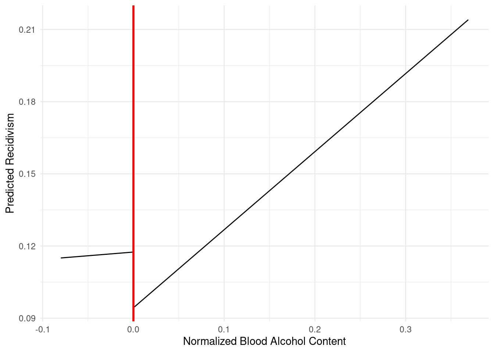
As we can see, we observe a quite clear jump at the cut-off when this specific functional form is imposed, and this jump appears to be in line with the quantity estimate above by the rdrobust command. But to see that this is indeed what rdrobust does, we can implement this model “by hand” with the exact same optimal bandwidth used in rdrobust. In this case, we will also estimate exactly the same regression discontinuity estimate as above (though not the same standard errors, given that rdrobust implements bias-correction methods discussed in Section X.X.X of the book).
data <-read_dta("data/Hansen_2014.dta")data$bac1 <- data$bac1 -0.08rdd_result <-rdrobust(data$recidivism, data$bac1, kernel ="uniform")coef_rdrobust_value <- rdd_result$coef[1] # Save the RD estimate coefficient for reference# Create a dummy variable `dui` that equals 1 if `bac1` is greater than 0, indicating DUI statusdata$dui <-as.integer(data$bac1 >0)# Run a manual OLS regression of recidivism on DUI status, centered BAC, and the interaction term within the RD bandwidth# Extract the left and right bandwidths from rdrobust outputleft_bandwidth <- rdd_result$bws[1]right_bandwidth <- rdd_result$bws[2]filtered_data <-subset(data, bac1 >-left_bandwidth & bac1 < right_bandwidth)manual_ols <-lm(recidivism ~ dui + bac1 +I(bac1 * dui), data = filtered_data)coef_manual <-coef(manual_ols)["dui"]cat("Coeficiente de rdrobust con controles:", coef_rdrobust_value, "\n")
Coeficiente de rdrobust con controles: -0.01699532
cat("Coeficiente manual con controles:", coef_manual, "\n")
Coeficiente manual con controles: -0.01751102
It is illustrative to also see that we can replicate point estimates (though not confidence intervals) with other polynomial orderings, and with other kernel density estimates. Above we had used a uniform density, because this implied simply assigning the same weight to each observation. However, it is somewhat more standard (and indeed, rdrobusts default behaviour), to use a triangular kernel which gives the most weight to units closest to the cut-off, linearly declining to 0 at the end of the optimal bandwidth. To see that we can also replicate results manually in other settings, let’s start by consider the case where we wish to work with the default behaviour in rdrobust and use a triangular density. We will begin by simply estimating rdrobust and saving the coefficient of interest:
data <-read_dta("data/Hansen_2014.dta")# Center the `bac1` variable around the DUI threshold by subtracting 0.08data$bac1 <- data$bac1 -0.08# Re-run rdrobust using the default triangular kernel densitylibrary(rdrobust)rdd_result_triangle <-rdrobust(data$recidivism, data$bac1)# Extract the lower and upper bandwidthslower <--rdd_result_triangle$bws[1]upper <- rdd_result_triangle$bws[2]# Store the RD Robust coefficient for referencecoef_rdrobust_triangle <- rdd_result_triangle$coef[1]# Display the results for comparisoncat("Our estimation bandwidth is from", lower, "to", upper, "\n")
Our estimation bandwidth is from -0.03145156 to 0.04967756
To generate a triangular kernel, we wish to generate a weight which is centred on the cut-point, and which declines linearly to the end points of this estimation bandwidth. Noting that our optimal bandwidth is the same on both sides, and that our running variable has been re-centred at zero, we can define our triangular kernel weights \(K\) as follows: \[
K(running\ variable) = (h_{opt}-|running\ variable|),
\] for all values between \(-h_{opt}\) and \(h_{opt}\). This ensures that our weights will reach their maximum point when centred on 0 (the cut-off), and decline to 0 at the end of the optimal bandwidth range. We do this below, checking to see what our weight variable looks like to ensure that we have set this up correctly.
data <-read_dta("data/Hansen_2014.dta")# Center the `bac1` variable around the DUI threshold by subtracting 0.08data$bac1 <- data$bac1 -0.08rdd_result <-rdrobust(data$recidivism, data$bac1)# Generate weightsleft_bandwidth <- rdd_result$bws[1] # Left bandwidth from rdrobustdata$K <- left_bandwidth -abs(data$bac1)data$K[data$K <0] <-NA# Replace negative values with NAggplot(data, aes(x = bac1, y = K)) +geom_line(color ="red", size =1) +xlim(-0.05, 0.05) +labs(x ="Blood Alcohol Content (recentred)", y ="Kernel Weight") +theme_minimal()
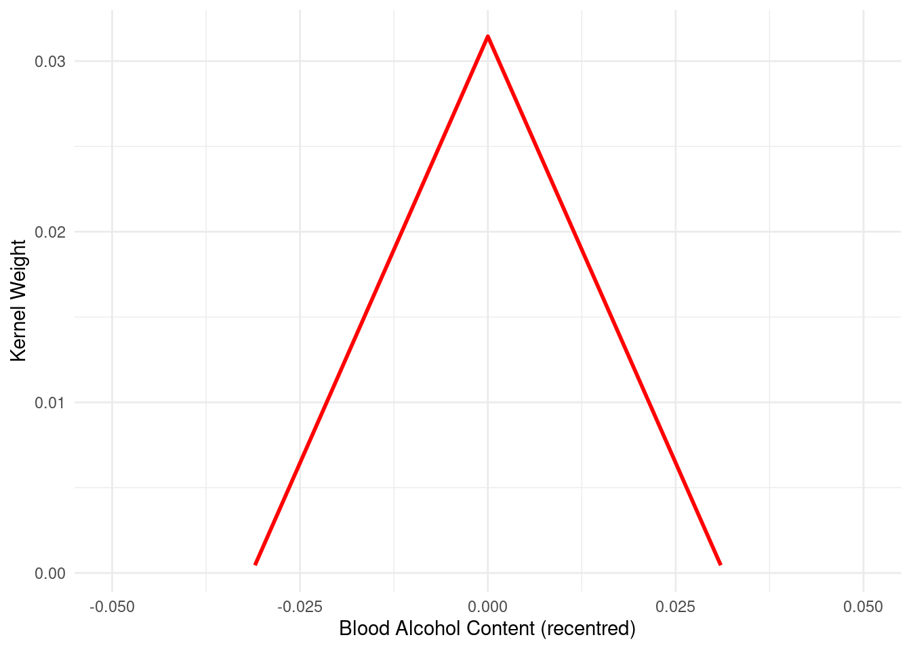
With this triangular weight in hand, we can once again “manually” replicate the rdrobst point estimate (though not the standard errors). This is simply done using our linear fit for the running variable on each side of the cut-off, and weighting using the kernel:
data <-read_dta("data/Hansen_2014.dta")data$bac1 <- data$bac1 -0.08rdd_result <-rdrobust(data$recidivism, data$bac1)# Generate kernel weights based on the left bandwidthleft_bandwidth <- rdd_result$bws[1]data$K <- left_bandwidth -abs(data$bac1)data$K[data$K <0] <-NA# Replace negative weights with NA# Create a dummy variable `dui` that equals 1 if `bac1` is greater than 0data$dui <-as.integer(data$bac1 >0)coef_rdrobust_triangle <- rdd_result$coef[1]# Estimate the "manual" RD using weighted regression with kernel weightsmanual_ols <-lm(recidivism ~ dui + bac1 +I(bac1 * dui), data = data, weights = data$K)coef_manual_triangle <-coef(manual_ols)["dui"]cat(sprintf("rdrobust triangular kernel: %08.7f\n", coef_rdrobust_triangle))
As we see above, our estimates are identical, up to a large number of decimal places. Finally, in the interests of completion, let’s just confirm to ourselves that we can also replicate what rdrobust does with a quadratic fit of the running variable. In this case, we need to simply augment the specification which we estimated previously which generated a separate linear fit on each side of the cut-off of interest with an additional quadratic term on each side. While there are various ways we can do this, one of these is documented below:
data <-read_dta("data/Hansen_2014.dta")data$bac1 <- data$bac1 -0.08data$dui <-as.integer(data$bac1 >0)# Generate linear fit for the right-hand side (interaction term)data$bacXabove <- data$bac1 * data$dui# Generate quadratic fitdata$bac_sq <- data$bac1^2# Generate quadratic fit for the right-hand side (interaction term)data$bac_sqXabove <- data$bac_sq * data$dui
Now, with linear and quadratic forms of the running variable, as well as indicators allowing for separate trends on either side of the cut-off, we can confirm that rdrobust with a quadratic running variable is the same (in terms of point estimate) as a regression of the outcome on dui plus the separate quadratic fit on each side:
data <-read_dta("data/Hansen_2014.dta")data$bac1 <- data$bac1 -0.08data$dui <-as.integer(data$bac1 >0)# Generate interaction terms for linear and quadratic fitsdata$bacXabove <- data$bac1 * data$duidata$bac_sq <- data$bac1^2data$bac_sqXabove <- data$bac_sq * data$duirdd_result_quad <-rdrobust(data$recidivism, data$bac1, p =2, kernel ="uniform")# Extract the bandwidths from rdrobust for manual replicationleft_bandwidth <- rdd_result_quad$bws[1]right_bandwidth <- rdd_result_quad$bws[2]# Manually replicate the quadratic RD estimate using OLS within the bandwidthfiltered_data <-subset(data, bac1 >-left_bandwidth & bac1 < right_bandwidth)manual_ols_quad <-lm(recidivism ~ dui + bac1 + bacXabove + bac_sq + bac_sqXabove, data = filtered_data)# Display the summary of the manual OLS regressionsummary(manual_ols_quad)
Call:
lm(formula = recidivism ~ dui + bac1 + bacXabove + bac_sq + bac_sqXabove,
data = filtered_data)
Residuals:
Min 1Q Median 3Q Max
-0.1191 -0.1098 -0.1028 -0.0981 0.9031
Coefficients:
Estimate Std. Error t value Pr(>|t|)
(Intercept) 0.113668 0.005556 20.457 <2e-16 ***
dui -0.016798 0.007030 -2.389 0.0169 *
bac1 -0.505607 1.041389 -0.486 0.6273
bacXabove 0.542384 1.122038 0.483 0.6288
bac_sq -11.688422 38.593007 -0.303 0.7620
bac_sqXabove 18.469560 39.570673 0.467 0.6407
---
Signif. codes: 0 '***' 0.001 '**' 0.01 '*' 0.05 '.' 0.1 ' ' 1
Residual standard error: 0.3074 on 77719 degrees of freedom
Multiple R-squared: 0.0005298, Adjusted R-squared: 0.0004655
F-statistic: 8.24 on 5 and 77719 DF, p-value: 8.591e-08
We can see here that the coefficient on dui in the latter model is identical to the coefficient estimate in rdrobust with the quadratic polynomial (p(2)).
Code Call Out 6.3: Fuzzy RDD, First Stages, and Reduced Forms
This Code Call Out is under construction.
In this code call-out we will explore a Fuzzy regression discontinuity design, documenting the first stage, reduced form estimate, and the resulting regression discontinuity estimate. We will work with data from Angrist and Lavy (1999) which examines class sizes and educational outcomes.
Sharp RD estimates using local polynomial regression.
Number of Obs. 2029
BW type mserd
Kernel Triangular
VCE method NN
Number of Obs. 288 1741
Eff. Number of Obs. 96 236
Order est. (p) 1 1
Order bias (q) 2 2
BW est. (h) 10.288 10.288
BW bias (b) 16.048 16.048
rho (h/b) 0.641 0.641
Unique Obs. 33 121
=====================================================================
Point Robust Inference
Estimate z P>|z| [ 95% C.I. ]
---------------------------------------------------------------------
RD Effect -7.285 -2.131 0.033 [-13.115 , -0.549]
=====================================================================
NULL
reduced_form_results <-rdrobust(outcome, running_var, c = cutoff, h = bandwidth, bwselect ="mserd") cat("\n Reduced form results:\n")
Reduced form results:
print(summary(reduced_form_results))
Sharp RD estimates using local polynomial regression.
Number of Obs. 2024
BW type Manual
Kernel Triangular
VCE method NN
Number of Obs. 287 1737
Eff. Number of Obs. 96 236
Order est. (p) 1 1
Order bias (q) 2 2
BW est. (h) 10.288 10.288
BW bias (b) 10.288 10.288
rho (h/b) 1.000 1.000
Unique Obs. 287 1737
=====================================================================
Point Robust Inference
Estimate z P>|z| [ 95% C.I. ]
---------------------------------------------------------------------
RD Effect 4.316 0.285 0.775 [-8.795 , 11.791]
=====================================================================
NULL
# rdplot of the reduced form out <-rdplot(outcome, running_var, c = cutoff, p =3, title ="", x.label ="Enrollment", y.label ="Test scores Verbal (reading scores)")
[1] "Mass points detected in the running variable."
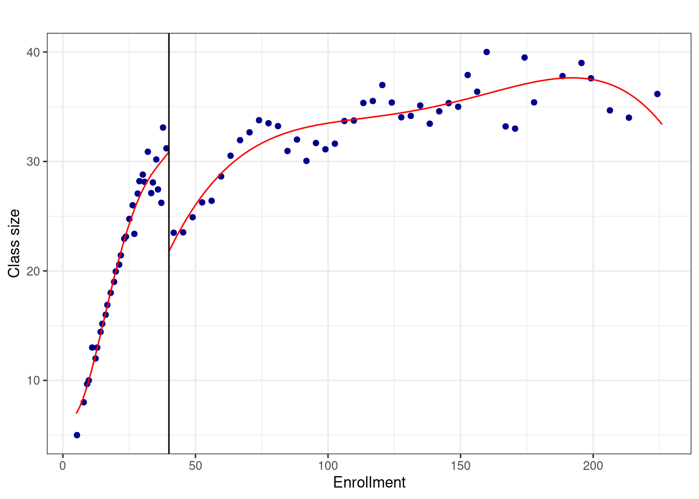
plot <- out$rdplot +theme_minimal() +theme(axis.text.x =element_text(size =14, color ="black"), axis.text.y =element_text(size =14, color ="black"), axis.title.y =element_text(size =14, face ="bold", color ="black"), axis.title.x =element_text(size =14, face ="bold", color ="black"), plot.title =element_text(size =16, face ="bold", hjust =0.5), panel.grid.major =element_line(color ="gray85"), panel.grid.minor =element_blank()) plot
# Extract the optimal bandwidthbandwidth <- fuzzy_rd_results$bws[1]# First stage: Effect on treatment receivedfirst_stage_results <-rdrobust(received_treatment, running_var, c = cutoff, h = bandwidth, bwselect ="mserd") cat("First stage results:\n")
First stage results:
print(summary(first_stage_results))
Sharp RD estimates using local polynomial regression.
Number of Obs. 2029
BW type Manual
Kernel Triangular
VCE method NN
Number of Obs. 288 1741
Eff. Number of Obs. 70 172
Order est. (p) 1 1
Order bias (q) 2 2
BW est. (h) 7.220 7.220
BW bias (b) 7.220 7.220
rho (h/b) 1.000 1.000
Unique Obs. 288 1741
=====================================================================
Point Robust Inference
Estimate z P>|z| [ 95% C.I. ]
---------------------------------------------------------------------
RD Effect -7.304 -1.190 0.234 [-19.310 , 4.717]
=====================================================================
NULL
reduced_form_results <-rdrobust(outcome, running_var, c = cutoff, h = bandwidth, bwselect ="mserd") cat("\n Reduced form results:\n")
Reduced form results:
print(summary(reduced_form_results))
Sharp RD estimates using local polynomial regression.
Number of Obs. 2024
BW type Manual
Kernel Triangular
VCE method NN
Number of Obs. 287 1737
Eff. Number of Obs. 70 172
Order est. (p) 1 1
Order bias (q) 2 2
BW est. (h) 7.220 7.220
BW bias (b) 7.220 7.220
rho (h/b) 1.000 1.000
Unique Obs. 287 1737
=====================================================================
Point Robust Inference
Estimate z P>|z| [ 95% C.I. ]
---------------------------------------------------------------------
RD Effect 2.777 -0.090 0.928 [-14.131 , 12.883]
=====================================================================
NULL
if (abs(manual_cate - coef_fuzzy_rd) <1e-6) { cat("Manual and Fuzzy RD coefficients match perfectly.\n") } else{ cat("Discrepancy detected between manual and Fuzzy RD coefficients. Review settings.\n") }
Manual and Fuzzy RD coefficients match perfectly.
Code Call Out 6.4: Manipulation and balance tests in RDD
This Code Call Out is under construction.
In this code call-out we will work with data from Holden (2016), who examines the impact of receipt of a school level grant for textbook purchases on student performance in these schools. This is estimated based on a discontinuity in the assignment of a one time payment for schools with scores falling below a specific point. Below, we will work with these data to explore a range of standard diagnostic tests including balance tests considering how a number of pre-determined variables move around the cut-off of interest, as well as McCrary (2008) tests examining the density of the running variable on either side of the cut-off.
Below we will load data provided by Holden (2016), and redefine the running variable to be centred on zero. In this call-out we will focus on schools at the primary level, for which the relevant cut-off is 643 points. In the paper, middle and high schools are also considered which have different cut-off points (600 and 584 points respectively), though for simplicity here we will focus on just primary schools, and so begin by simply sub-setting the data in this way, as well as generating an average score outcome we will consider below as a measure of performance based on the mean of normalised math and reading scores:
# Load necessary librarieslibrary(haven) # For reading Stata fileslibrary(dplyr) # For data manipulationlibrary(tidyr) # For handling missing data# Load the datasetdf <-read_dta("data/Holden_2016.dta")# Keep only primary schools where 'stype' is 'E'df <- df %>%filter(stype =="E")# Generate the 'norm' variable based on the 2003 API scoredf <- df %>%mutate(norm = api_rank -643)# Generate normalized (z-score) scores for math and readingdf <- df %>%mutate(z_mathscore = (mathscore -mean(mathscore, na.rm =TRUE)) /sd(mathscore, na.rm =TRUE),z_readscore = (readingscore -mean(readingscore, na.rm =TRUE)) /sd(readingscore, na.rm =TRUE) )# Generate the average score as the mean of 'z_mathscore' and 'z_readscore'df <- df %>%mutate(average_score =rowMeans(select(., z_mathscore, z_readscore), na.rm =TRUE))# Print the first rows to verifyprint(head(df))
We can have a look at what the distribution of the running variable looks like in this setting. Below we see that there is substantial mess on either side of the cut-off now re-defined at 0. While the histogram points to potential heaping in this variable at around 0, we can test this formally using a McCrary (2008) test.
# Load necessary librarieslibrary(haven) # For reading Stata fileslibrary(ggplot2) # For creating plots# Load the datasetdf <-read_dta("data/Holden_2016.dta")# Keep only primary schools where 'stype' is 'E'df <- df[df$stype =="E", ]# Generate the 'norm' variable (Normalized API Score)df$norm <- df$api_rank -643# Generate the 'ind' variable to indicate scores <= 643df$ind <- df$api_rank <=643# Create a histogram of the 'norm' variablehist_plot <-ggplot(df, aes(x = norm)) +geom_histogram(bins =50, color ="black", fill ="lightblue") +labs(x ="Normalized API Score (norm)",y ="Frequency",title ="Histogram of Norm Variable Around Cutoff" ) +theme_minimal()# Save the histogram as an image fileggsave("histRVbooks.png", plot = hist_plot, dpi =300, width =10, height =6)# Display the plotprint(hist_plot)
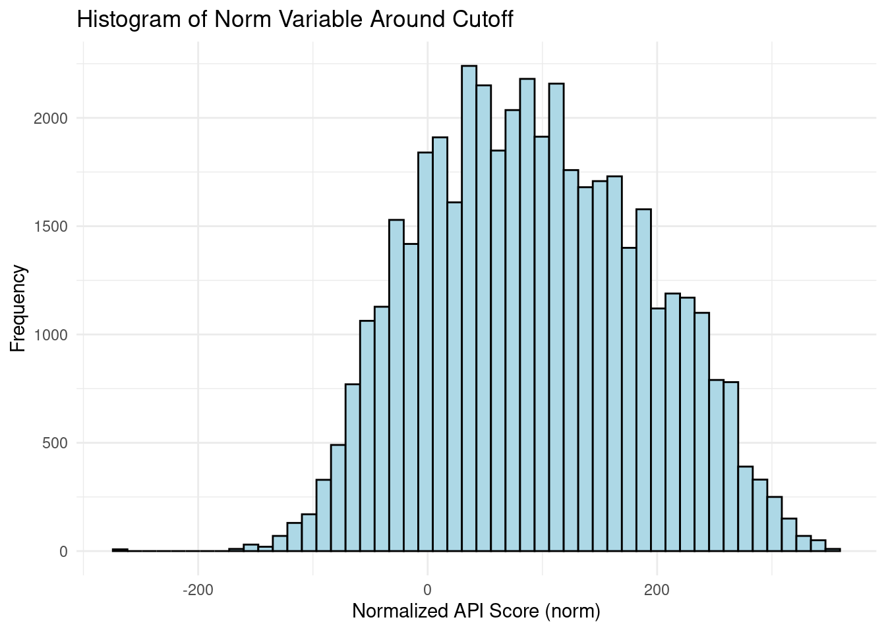
We do this below. In particular, while this is based on the idea of McCrary (2008), we implement the more modern version of this test, defined by Cattaneo, Jansson, and Ma (2020) based on local polynomical methods and optimal bandwidths. This can be implemented using the rddensity library which was written to implement these methods, and described at more length in Cattaneo, Jansson, and Ma (2018). We do this below, requesting a plot output, and using the nobinomial option to simply focus on the standard McCrary test which looks at
# Load necessary librarieslibrary(haven) # For reading Stata fileslibrary(ggplot2) # For plottinglibrary(rddensity) # For density analysis# Load the datadf <-read_dta("data/Holden_2016.dta")# Filter only primary schools ('stype' = 'E')df <- df[df$stype =="E", ]# Create the normalized variable 'norm'df$norm <- df$api_rank -643# Create the indicator variable for the cutoff pointdf$ind <-as.integer(df$api_rank <=643)# Filter data after the year 2004df_filtered <- df[df$year >2004, ]# Execute the density analysisresults <-rddensity(df_filtered$norm, c =0)# Print a summary of the resultsprint("Density Test Results:")
[1] "Density Test Results:"
print(summary(results))
Manipulation testing using local polynomial density estimation.
Number of obs = 31004
Model = unrestricted
Kernel = triangular
BW method = estimated
VCE method = jackknife
c = 0 Left of c Right of c
Number of obs 5873 25131
Eff. Number of obs 3362 5495
Order est. (p) 2 2
Order bias (q) 3 3
BW est. (h) 40.725 51.168
Method T P > |T|
Robust -1.1701 0.242
P-values of binomial tests (H0: p=0.5).
Window Length / 2 <c >=c P>|T|
1.000 112 210 0.0000
2.000 231 315 0.0004
3.000 378 399 0.4731
4.000 455 427 0.3633
5.000 553 567 0.6977
6.000 658 679 0.5844
7.000 784 805 0.6159
8.000 861 896 0.4173
9.000 938 1001 0.1591
10.000 1008 1064 0.2269
NULL
# Create a histogram to visualize the densityhist_plot <-ggplot(df_filtered, aes(x = norm)) +geom_histogram(bins =30, color ="black", fill ="lightblue", alpha =0.7) +geom_vline(xintercept =0, color ="red", linetype ="dashed", label ="Cutoff point (643)") +labs(x ="Normalized Variable (norm)",y ="Frequency",title ="Density around the Cutoff Point" ) +theme_minimal() +theme(legend.position ="none")# Show the plotprint(hist_plot)
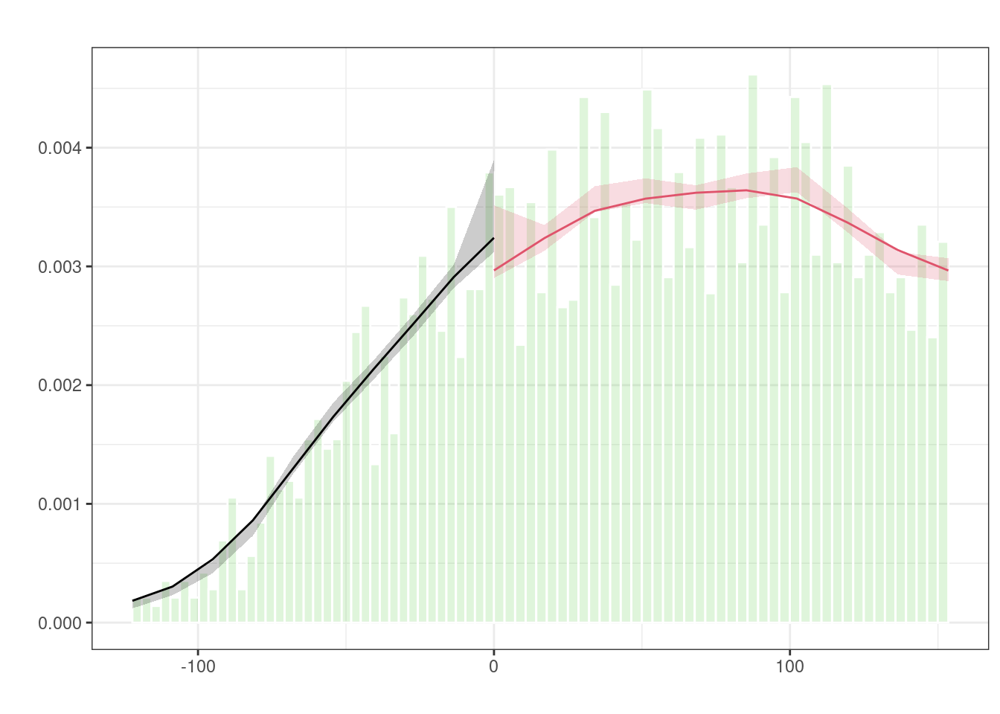
Here we see that based on the optimal bandwidth local polynomial test, we do not observe clear evidence of a statistically significant jump in the density of the running variable around the cut-off. We can see this graphically with the density estimate on each side of the cut-off contained within the confidence intervals of the density on the other side, however can also see it formally with the reported test statistic (\(t=-1.17\)).
Given the discrete nature of the running variable, it may also be of interest to consider the binomial tests discussed in XXXXX. We do so below, focusing on quite small windows of 2 point bins on either side of the cutoff, growing to up to 20 point bins on either side of the cut-off.
# Load necessary librarieslibrary(haven) # For reading Stata fileslibrary(ggplot2) # For plottinglibrary(rddensity) # For density analysis# Load the datadf <-read_dta("data/Holden_2016.dta")# Create the normalized variable 'norm' before filteringdf$norm <- df$api_rank -643# Filter data after the year 2004df_filtered <- df[df$year >2004, ]# Perform the density analysis with the binomial test enabled (default)results <-rddensity(df_filtered$norm, c =0, binoW =2)# Print the results using str() to inspect the structurecat("Density Test Results:\n")
Density Test Results:
cat("Estimated density to the left:", results$hat$left, "\n")
Estimated density to the left: 0.003534229
cat("Estimated density to the right:", results$hat$right, "\n")
# Create a histogram to visualize the densityhist_plot <-ggplot(df_filtered, aes(x = norm)) +geom_histogram(bins =30, color ="black", fill ="lightblue", alpha =0.7) +geom_vline(xintercept =0, color ="red", linetype ="dashed", label ="Cutoff point") +labs(x ="Normalized Variable (norm)",y ="Frequency",title ="Density around the Cutoff Point" ) +theme_minimal() +theme(legend.position ="none")# Show the plotprint(hist_plot)
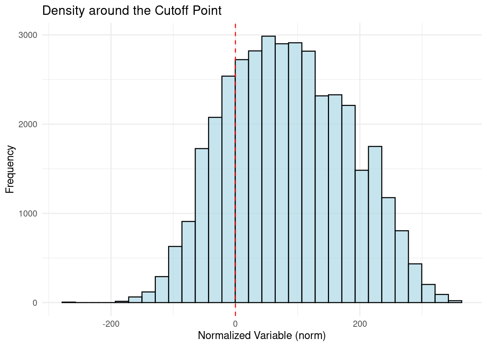
It is clear from looking at the histogram of test scores around the cut-off that this is growing in frequency as moving away from the cut-off on the right, and falling in frequency as moving away from the cut-off on the left. For this reason, clearly we will eventually see that binary tests will reject equality of the number of observations on equal bins on either side, and we observe that this does occur once considering bins of 16 points on either side, where there are 1708 schools with a normalised score of 0-16, compared to only 1510 schools with a normalised score of -16 to -1. However, we observe that closer to the bandwidth the number of schools in contiguous bins is relatively similar, and does not lead to rejections of binomial tests, with the exception of scores very close to the cut-off, reflecting what we observed graphically in our original histogram.
Tests of Covariate Balance
Given that the reform studied in Holden (2016) we implemented after 2004, we have a range of measures which we know cannot depend on treatment assignment, and so have a logic test of covariate balance which we can consider. Here we will simply implement an identical regression discontinuity estimator, however focusing on baseline covariates, which helps to verify that any observed differences in the outcome can be attributed to the treatment effect, rather than pre-existing differences between the groups.
We may wish to begin by confirming that we can effectively replicate the main regression discontinuity result before replicating this strategy to test for covariate balance. Below we consider a principal outcome (mean test scores), and observe how it varies around the cut-off after the reform was put in place. We use the option scalepar(-1) to simply re-scale the estimate by -1, noting that schools below the cut-off receive the subsidy. We find that on average in the years following the reform, scores in treated schools are around 0.15-0.16 standard deviations higher than scores in untreated schools, in line with the results in Holden (2016) (eg Table 7 or Figure 8b).
# Load necessary librarieslibrary(haven) # For reading Stata fileslibrary(dplyr) # For data manipulationlibrary(rdrobust) # For regression discontinuity analysis# Load the datasetdf <-read_dta("data/Holden_2016.dta")# Keep only primary schools where 'stype' is 'E'df <- df %>%filter(stype =="E")# Generate the 'norm' variabledf <- df %>%mutate(norm = api_rank -643)# Generate normalized (z-score) math and reading scoresdf <- df %>%mutate(z_mathscore = (mathscore -mean(mathscore, na.rm =TRUE)) /sd(mathscore, na.rm =TRUE),z_readscore = (readingscore -mean(readingscore, na.rm =TRUE)) /sd(readingscore, na.rm =TRUE) )# Generate the average scoredf <- df %>%mutate(average_score =rowMeans(select(., z_mathscore, z_readscore), na.rm =TRUE))# Filter for years after 2004df_filtered <- df %>%filter(year >2004)# Run rdrobust on 'average_score' with 'norm' as the running variablerdrobust_results <-rdrobust(y = df_filtered$average_score,x = df_filtered$norm,scalepar =-10)# Print resultsprint(summary(rdrobust_results))
Sharp RD estimates using local polynomial regression.
Number of Obs. 31004
BW type mserd
Kernel Triangular
VCE method NN
Number of Obs. 5873 25131
Eff. Number of Obs. 1601 1764
Order est. (p) 1 1
Order bias (q) 2 2
BW est. (h) 17.986 17.986
BW bias (b) 37.325 37.325
rho (h/b) 0.482 0.482
Unique Obs. 127 325
=====================================================================
Point Robust Inference
Estimate z P>|z| [ 95% C.I. ]
---------------------------------------------------------------------
RD Effect 1.569 4.522 0.000 [1.014 , 2.567]
=====================================================================
NULL
Let’s now consider an identical implementation for covariates (and baseline measures for the outcome), focusing on measures entirely before the policy was put in place. We will do this by first defining a local of variables which we wish to test:
# Load necessary librarylibrary(haven) # For reading Stata files# Load the datasetdf <-read_dta("data/Holden_2016.dta")# Define the list of covariatescovars <-c("average_score", # Average of standardized scores"total", # Total variable (e.g., total students)"pct_hi", # Percentage Hispanic"pct_wh", # Percentage White"pct_other", # Percentage Other"fte_t", # Full-time equivalent teachers"fte_a", # Full-time equivalent administrators"fte_p", # Full-time equivalent paraprofessionals"classsize"# Class size)
Now we will loop through these covariates or baseline measures, for each implementing the same regression discontinuity procedure, but now only with data from the pre-treatment period. We will save the output of these tests into a single dataframe which we can then use for tabulation.
# Load necessary librarieslibrary(haven) # For reading Stata fileslibrary(dplyr) # For data manipulation# Load the datadf <-read_dta("data/Holden_2016.dta")# Keep only primary schoolsdf <- df %>%filter(stype =="E")# Create the normalized variabledf <- df %>%mutate(norm = api_rank -643)# Create normalized (z-score) math and reading scoresdf <- df %>%mutate(z_mathscore = (mathscore -mean(mathscore, na.rm =TRUE)) /sd(mathscore, na.rm =TRUE),z_readscore = (readingscore -mean(readingscore, na.rm =TRUE)) /sd(readingscore, na.rm =TRUE) )# Verify if 'z_mathscore' and 'z_readscore' exist correctlyif (!all(c("z_mathscore", "z_readscore") %in%colnames(df))) {stop("Error: Missing columns 'z_mathscore' or 'z_readscore'")}# Calculate the average scoredf <- df %>%mutate(average_score =rowMeans(cbind(z_mathscore, z_readscore), na.rm =TRUE))# Print a preview of the dataframe to confirmprint(head(df))
# Define the covariatescovars <-c("average_score", "total", "pct_hi", "pct_wh", "pct_other", "fte_t", "fte_a", "fte_p", "classsize")# Create a data frame to store resultsrd_balance <-data.frame(variable = covars,mean =NA,RDest =NA,LB =NA,UB =NA)# Loop to compute discontinuity for each covariatefor (i inseq_along(covars)) { covar <- covars[i]# Check if the covariate exists in the DataFrameif (!covar %in%colnames(df)) {cat(sprintf("The column %s does not exist in the DataFrame.\n", covar))next }# Compute the mean of the covariate for years before 2004 mean_value <-mean(df %>%filter(year <2004) %>%pull(covar), na.rm =TRUE)# Run rdrobust rdrobust_results <-rdrobust(y = df %>%filter(year <2004) %>%pull(covar),x = df %>%filter(year <2004) %>%pull(norm),scalepar =-1 )# Extract key results from rdrobust RD_est <- rdrobust_results$coef["Conventional", "Coeff"] # Conventional estimate LB <- rdrobust_results$ci["Conventional", "CI Lower"] # Lower bound of CI UB <- rdrobust_results$ci["Conventional", "CI Upper"] # Upper bound of CI# Print the resultscat(sprintf("RD estimate: %f\n", RD_est))cat(sprintf("95%% CI: [%f, %f]\n", LB, UB))# Save results to the DataFrame rd_balance[i, "mean"] <- mean_value rd_balance[i, "RDest"] <- RD_est rd_balance[i, "LB"] <- LB rd_balance[i, "UB"] <- UB# Display the result for the current covariatecat(sprintf("RD estimate for variable %s: %f\n", covar, RD_est))cat(sprintf("95%% CI: [%f, %f]\n", LB, UB))}
# Save the results to a Stata filewrite_dta(rd_balance, "covariateBalance.dta")
# Load necessary librarieslibrary(haven) # For reading Stata fileslibrary(tibble) # For creating tibbles (similar to DataFrames)# Create a DataFrame equivalent to "frame create rd_balance"rd_balance <-tibble(variable =character(),mean =numeric(),RDest =numeric(),LB =numeric(),UB =numeric())# Load the covariate balance data from a Stata filecovariate_balance <-read_dta("covariateBalance.dta")# Mimic switching to the frame and displaying the content# Display the rd_balance tibblecat("Current rd_balance tibble:\n")
Current rd_balance tibble:
print(rd_balance)
# A tibble: 0 × 5
# ℹ 5 variables: variable <chr>, mean <dbl>, RDest <dbl>, LB <dbl>, UB <dbl>
# Display the covariate_balance tibblecat("\nLoaded covariateBalance tibble:\n")
Overall, while various things look good here – for example we observe a quite precise null effect when considering the outcome of interest before the reform was put in place, we also observe some misbalance on other variables which we may wish to dig into further. On balance, it might appear that much of the imbalance is owes to slightly larger schools being just below the cut-off while slightly smaller schools being just above, with misbalance observed for the total number of students (total) as well as full time equivalent staff (fte, where t, a and p respectively refers to teachers, aaaa and ppppp). We do not observe any evidence of misbalance either in terms of the demographic composition of schools or student to teacher ratio.
A Donut Regression Discontinuity
Finally, note that because we observed some weak evidence of heaping very close to the cut-off we may seek to confirm that our results are not sensitive to the exclusion of these observations. We can do this using a donut RD, omitting observations within a small donut hole local to the cut-off. We will do this below, omitting all observations within 2 points of the cut-off:
# Load necessary librarieslibrary(haven) # For reading Stata fileslibrary(dplyr) # For data manipulationlibrary(rdrobust) # For regression discontinuity analysis# Load the datasetdf <-read_dta("data/Holden_2016.dta")# Keep only primary schoolsdf <- df %>%filter(stype =="E")# Generate the 'norm' variabledf <- df %>%mutate(norm = api_rank -643)# Generate normalized scores for math and readingdf <- df %>%mutate(z_mathscore = (mathscore -mean(mathscore, na.rm =TRUE)) /sd(mathscore, na.rm =TRUE),z_readscore = (readingscore -mean(readingscore, na.rm =TRUE)) /sd(readingscore, na.rm =TRUE) )# Generate the average scoredf <- df %>%mutate(average_score =rowMeans(select(., z_mathscore, z_readscore), na.rm =TRUE))# Apply the filtering conditionsdf_filtered <- df %>%filter(year >2004, abs(norm) >2)# Run rdrobust with the filtered datardrobust_results <-rdrobust(y = df_filtered$average_score,x = df_filtered$norm,scalepar =-1)# Print the resultsprint(summary(rdrobust_results))
Sharp RD estimates using local polynomial regression.
Number of Obs. 30458
BW type mserd
Kernel Triangular
VCE method NN
Number of Obs. 5642 24816
Eff. Number of Obs. 1370 1449
Order est. (p) 1 1
Order bias (q) 2 2
BW est. (h) 17.524 17.524
BW bias (b) 39.895 39.895
rho (h/b) 0.439 0.439
Unique Obs. 125 322
=====================================================================
Point Robust Inference
Estimate z P>|z| [ 95% C.I. ]
---------------------------------------------------------------------
RD Effect 0.161 3.234 0.001 [0.076 , 0.310]
=====================================================================
NULL
Here we observe that results change relatively little. Remember that above we estimated an effect of around 0.16 standard deviations in mean test scores, and here we observe reasonably similar effect of 0.16.
In practice, we likely wish to consider a slightly larger range of donuts, and so below we will conduct this test over a range of values from 0 points (which excludes only points which fall exactly at the cut-off) up to 6 points. This value of 6 might be somewhat extreme given that our optimal bandwidth was originally only around 18 points, but we can vary this quantity to see at what point the estimate breaks down.
# Load necessary librarieslibrary(haven) # For reading Stata fileslibrary(dplyr) # For data manipulationlibrary(rdrobust) # For regression discontinuity analysislibrary(ggplot2) # For visualization# Load the datasetdf <-read_dta("data/Holden_2016.dta")# Keep only primary schoolsdf <- df %>%filter(stype =="E")# Generate the 'norm' variabledf <- df %>%mutate(norm = api_rank -643)# Generate normalized scores for math and readingdf <- df %>%mutate(z_mathscore = (mathscore -mean(mathscore, na.rm =TRUE)) /sd(mathscore, na.rm =TRUE),z_readscore = (readingscore -mean(readingscore, na.rm =TRUE)) /sd(readingscore, na.rm =TRUE) )# Generate the average scoredf <- df %>%mutate(average_score =rowMeans(select(., z_mathscore, z_readscore), na.rm =TRUE))# Create lists to store resultsradii <-seq(0, 6, by =1) # 0 to 6 with step 1results <-data.frame(radius =numeric(), RDest =numeric(), RD_LB =numeric(), RD_UB =numeric())# Loop through each radiusfor (r in radii) {# Filter data for the current radius df_filtered <- df %>%filter(year >2004, abs(norm) > r)# Check if there are enough data points to perform rdrobustif (nrow(df_filtered) <30) {cat(sprintf("Not enough data for radius %d. Skipping.\n", r))next }# Run rdrobust rdrobust_results <-rdrobust(y = df_filtered$average_score,x = df_filtered$norm,scalepar =-1 )# Extract key results RD_est <- rdrobust_results$coef["Conventional", "Coeff"] LB <- rdrobust_results$ci["Conventional", "CI Lower"] UB <- rdrobust_results$ci["Conventional", "CI Upper"]# Append the results results <-rbind(results, data.frame(radius = r, RDest = RD_est, RD_LB = LB, RD_UB = UB))}# Plot the resultsggplot(results, aes(x = radius, y = RDest)) +geom_point() +geom_errorbar(aes(ymin = RD_LB, ymax = RD_UB), width =0.2) +geom_hline(yintercept =0, color ="red", linetype ="dashed") +labs(title ="Estimated Test Score Effect",x ="Radius of donut hole",y ="Estimated Test Score Effect" ) +theme_minimal()
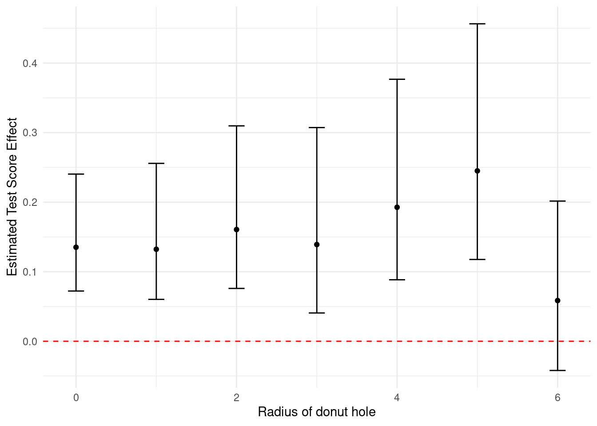
After estimating these models with varying donut holes, we have plotted them in the graph above allowing us to see the (relative) stability of this estimate over even quite large donut holes of up to 5 points. After this point, the estimate falls, though we may be less concerned about this given that we have discarded many of the observations which are truly of interest to us.
References
Angrist, Joshua D., and Victor Lavy. 1999. “Using Maimonides’ Rule to Estimate the Effect of Class Size on Scholastic Achievement*.”The Quarterly Journal of Economics 114 (2): 533–75. https://doi.org/10.1162/003355399556061.
Calonico, Sebastian, Matias D. Cattaneo, and Rocio Titiunik. 2014. “Robust Nonparametric Confidence Intervals for Regression-Discontinuity Designs.”Econometrica 82 (6): 2295–2326.
Cattaneo, Matias D., Michael Jansson, and Xinwei Ma. 2018. “Manipulation Testing Based on Density Discontinuity.”The Stata Journal 18 (1): 234–61.
Hansen, Benjamin. 2015. “Punishment and Deterrence: Evidence from Drunk Driving.”American Economic Review 105 (4): 1581–1617. https://doi.org/10.1257/aer.20130189.
Holden, Kristian L. 2016. “Buy the Book? Evidence on the Effect of Textbook Funding on School-Level Achievement.”American Economic Journal: Applied Economics 8 (4): 100–127. https://doi.org/10.1257/app.20150112.
McCrary, Justin. 2008. “Manipulation of the running variable in the regression discontinuity design: A density test.”Journal of Econometrics 142 (2): 698–714.
Silverman, Bernard W. 1986. Density Estimation for Statistics and Data Analysis. London: Chapman & Hall.